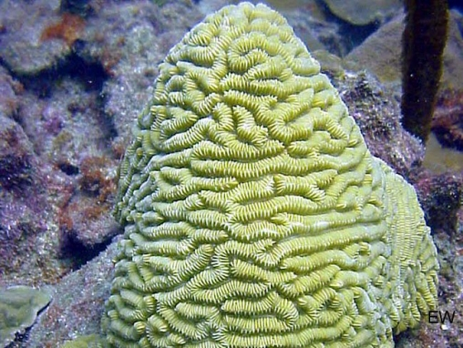
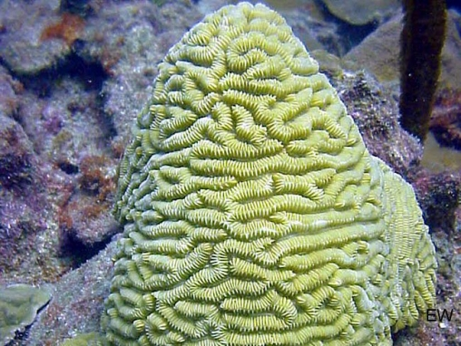

Animal Phyla
Coral reefs hold far more evolutionary groups than any other ecosystem on Earth. They contain 32 out of the 36 animal phyla (groups) that have been discovered. However, if you go diving on a reef, it is likely that every animal that you visibly see will belong to the following eight...

Annelids
Means "little ring". These are the segmented worms. In fact, this is the same phylum that the worms in your typical garden belong to.
On coral reefs, annelids include polychaete worms, christmas tree worms and feather duster worms. Many reef worms have frilly appendages which are mainly used for catching particles of food.
Worms also commonly take refuge by drilling into the reef. This increases structural complexity by opening up spaces that serve as microhabitats for other small organisms.


Arthropods
Means "jointed feet". They possess a hard exoskeleton. In the ocean, arthropods are predomonantly crustaceans. They can be thought of as being like the insects of the sea.
On reefs they include crabs, lobsters and shrimp. There are also many parasitic species that latch on to fish and feed on their tissues.
However other crustacean species are also often cleaners that help to remove parasites from fish that they will feed on.


Chordates
This is our own phylum. 'Chordata' means "having a cord".
It encompasses all vertebrates (fish, mammals, reptiles, birds and amphibians) as well as a few non-vertebrate relatives (e.g tunicates).
The defining characteristic is that all members have at least a basic spinal cord in at least one life stage.
By far the most abundant chordates on the reef are fish.
Fish can be grouped into two types: the teleosts (bony fish) and the elasmobranchs (fish with skeletons made of cartilage).
The elasmobranchs consist of the sharks and rays. The vast majority of other fish are teleosts.


Cnidarians
Means "sea nettle". This is arguably the most essential phylum on the reef as it includes coral. It also includes jellyfish, anemones, box jellies, portuguese man of war and more.
They all possess stinging cells and lack true brains, possessing only a basic nervous system.
They can exist as a single individual (e.g. jellyfish) or as colonies (e.g. corals).
In their larval stage they all live as polyps that are fixed to the seafloor. Many types (including jellyfish) become pelagic in their adult stage. We call this the 'medusa' stage.


Echinoderms
Means "porcupine skin". This group includes sea cucumbers, sea stars, brittle stars, sea urchins and feather stars.
One defining feature is that they hav a water vascular system that they use for movement. This means they push water through a network of chambers which enables them to move.
Many echinoderms, particularly sea urchins, are very important grazers that help to keep algae levels down on the reef. This helps to keep the conditions suitable for coral growth.


Molluscs
Means "soft-bodied". This group includes slugs, snails, bivalves ('shellfish'), and cephalopods (i.e. octopus, squids and cuttlefish).
One defining feature is the possession of a mantle cavity. That is an anatomical structure that contains most of their vital organs. Cephalopods are the most neurologically complex and intelligent invertebrates on the planet.

Platyhelminthes
Means "flatworm", which is also their lamen name. They are very primitive and are normally only a few centimetres or millimetres long.
Unlike annelids, flatworms are not segmented.
Their flat bodies allow gas and nutrients to be transported easily throughout their body.
They are highly flexible, often possessing the same range of movements as the human tongue. Many species are parasitic and will feed on the blood and tissues of fish.
In any case, they are a very important part of the food chain.


Porifera
Means "bearing pores". These are the sponges. They are the oldest living animal phylum. As adults, all sponges are sessile (attached to the sea floor) and have bodies full of pores and channels to allow water circulation so that they can effectively collect particles of food from the water.
This helps prevent too many nutrients from building in the water. As such, sponges are important for maintaining good quality clean water on the reef. They also provide habitat for small organisms including juvenile fish and brittle stars. The cells of sponges have an unusual ability to transform to other types and relocate around the body.

 
